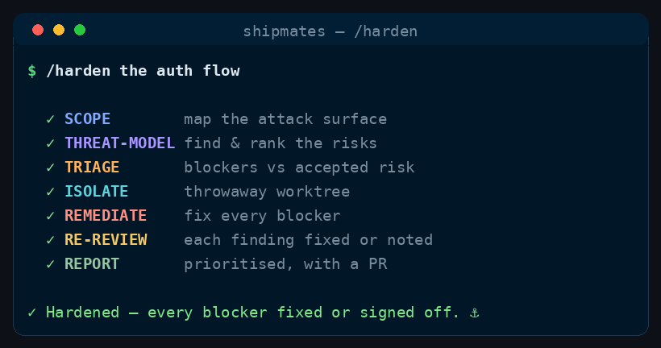

Command
/harden
threat-model → remediate → re-review
Security-harden a surface — threat-model it, rank the findings, and re-review until every finding has a fix or an explicit accepted-risk note (and secrets/dependency scans are clean). Read-only by default — it reports; remediation happens on a branch, opt-in.
See it run

/harden runs, in order.How to run it
Run it in your harness
/harden <what to harden — a module, an endpoint, an auth flow, or the whole app><angle brackets> = required · [square brackets] = optional
Step by step
The stages
Seven stages, in order.
Cost discipline
- Stable workflow instructions come before runtime input. Read and parse the complete runtime-input section at the end before acting; do not weave volatile issue text, arguments, diffs, or generated output through this prefix.
- Complexity-Based Tiered Execution: Before starting the workflow, evaluate the task complexity based on the input and repository context to select one of three execution paths:
- Simple: Minor/straightforward changes (e.g. documentation, typos, single config line, small edits affecting <= 2 files and <= 15 lines of code, no specialist flags). Bypasses spawning all subagents entirely; the main agent (you) executes, validates, and delivers the PR directly.
- Medium: Moderate changes (<= 5 files, no major module boundaries, no architectural/security/delivery flags). Bypasses parallel design specs and the large acceptance board. Spawn a Planner and a single Builder and single SDET. The main agent reviews and delivers.
- High: Complex or high-risk changes (e.g. major refactors, architectural boundaries, security/delivery changes). Follow the full multi-agent process loop described in the command.
- Spend subagent seats only where their decision can change the outcome. Route model and effort at spawn by work difficulty; never hardcode a model in canonical content.
- Ask every subagent for a compact structured return: decision/status first, criterion findings and minimal evidence, then blockers, changed files with one-line rationale, and next action as relevant. Return decisions, not transcripts or raw logs.
Take a surface and make it defensibly secure: a security-engineer threat-models it, findings are ranked and fixed, and the loop closes only when every finding is either remediated or carries an explicit, reasoned accepted-risk note — and the secrets/dependency scans are clean. The gate is "nothing Critical/High left unaddressed," not "looks fine."
The hardening surface comes from the Runtime input section at the end of this workflow.
-
Stage 0 — Scope the attack surface
Map what's in scope: the entry points (routes, CLI, message handlers), the trust boundaries, what data crosses them, and what an attacker controls. List the assets worth protecting. Keep the surface bounded to the validated runtime input — note explicitly what you're not covering so it isn't mistaken for cleared.
-
Stage 1 — Threat-model & find
Crew:
security-engineerSpawn the
security-engineerto walk the surface with STRIDE across each trust boundary and review against OWASP fundamentals (broken access control / IDOR, injection, secrets & crypto, supply chain, secure defaults / defence in depth). Run the repo's existing SCA / secret scanners as corroboration — but reason about data flow, don't just collect lint. Return findings ranked Critical/High/Medium/Low, each with the exploit path (inputs → impact), exact location, and a specific fix. -
Stage 2 — Triage
Separate blockers (Critical/High, and any hardcoded secret / clear injection / broken authz) from nits (Low, defence-in-depth niceties). For each blocker: fix it, or — if it's a deliberate, justified risk — record an accepted-risk note (what, why it's acceptable, who'd own it). Nothing Critical/High may be silently dropped.
-
Stage 2.5 — Isolate
Crew: (
MODE=pronly — orchestrator, deterministic, no agent)Nothing is edited until the branch exists. First check
git -C <repo> status --porcelain; if the caller's tree is dirty, stop and say so — tell them to commit or stash first, because a worktree cut fromHEADholds committed work only, and remediating a tree that doesn't match the findings'file:linelocations would fix the wrong thing. Otherwise, unlike/ship-issue's isolate stage, cut the worktree from the caller's currentHEAD, notorigin/<BASE_BRANCH>— on a clean tree, this is precisely so the findings located in Stages 0–2 still exist in the branch being remediated:git -C <repo> worktree add <WORKTREE_DIR> -b <BRANCH> HEADEvery remediation and re-review below runs inside
<WORKTREE_DIR>. UnderMODE=reportthis stage does not run, because nothing is written. -
Stage 3 — Remediate
Crew:
senior-engineerMODE=pronly. Underreportthis stage does not run: each blocker's fix is described in the findings table, not applied. The caller runsMODE=prwhen they want the change made.Spawn a
senior-engineerwith the exact blocker list; apply scoped fixes (parameterise the query, add the authz check, move the secret to config, pin/upgrade the dep) — no unrelated rewrites. Where a fix changes behaviour, add/adjust a test so it's covered. Rotate any exposed secret is a human action — flag it loudly; don't just delete it from the diff and consider it solved. -
Stage 4 — Re-review
Crew:
security-engineer(fresh pass)MODE=pronly. Underreportthere is nothing remediated to re-review — go straight to Stage 5 with the ranked findings.Re-run the
security-engineeragainst the remediated surface: confirm each blocker is actually closed (not moved), no fix introduced a new hole, and the secret/dependency scans are clean. Loop Stages 3–4 up toMAX_ROUNDS; if blockers remain after that, STOP and escalate with the open findings — never declare a surface hardened while a Critical/High stands. -
Stage 5 — Report (and PR, if
MODE=pr)Deliver: the threat model summary, the findings table (severity → status: fixed / accepted-risk / deferred), the remaining risk in plain words, and any human follow-ups (secret rotation, infra/config changes outside the repo). Under
report(the default) that report is the deliverable and the working tree is exactly as you found it — say so explicitly. Underpr, commit and push<BRANCH>and open the PR, same as/ship-issue's commit-push-PR stage, with the same trailers. Then gate on CI: pollgh pr checksuntil nothing is pending; a red check means pulling the failing log, fixing it, re-pushing, and re-polling — bounded byMAX_FIX_ROUNDS, after which you stop and escalate to the user with the failing log rather than looping. Never advance a red PR. Only once green do you stop there unlessMERGE_MODE=auto, and file Medium/Low items as labelled follow-up issues. UnderMERGE_MODE=auto, merge the PR and remove<WORKTREE_DIR>; the manual default leaves the worktree in place with the PR open for a human to merge.
Runtime input
$ARGUMENTS names the surface to harden: a module, endpoint/route, auth or payment flow, dependency set, or whole app. If empty, ask which surface; do not silently pick the whole repo.
Config
REVIEWER=security-engineer.BUILDER=senior-engineer.MAX_ROUNDS=4— the remediate/re-review loop cap (Stage 4).MAX_FIX_ROUNDS=2— a separate cap, on CI-fix rounds at Stage 5, so a permanently-red PR escalates to the user instead of looping.MODE=report(default) — read-only: threat-model, rank, report. It writes nothing to the working tree, not even a fix that looks safe; a mode that edits is named for it.pr— apply the remediations in a worktree on a branch and open a CI-gated PR, reusing the shape of/ship-issue's isolate stage and its commit-push-PR stage rather than a second path of its own. Infer from the request; when ambiguous, default toreport, and state which mode you ran.- Under
MODE=pronly:BASE_BRANCH= the branch the PR targets (the repo's default branch) — the worktree itself is cut from the caller's currentHEAD, notBASE_BRANCH(see Stage 2.5).WORKTREE_DIR=../<repo>--harden-<slug>.BRANCH=chore/harden-<slug>.MERGE_MODE=manual(stop at a reviewed PR;autoopt-in). The orchestrator owns all git/gh; agents never push. If there is no remote forghto open a PR against, stop at the branch and say so — never silently downgrade to writing in the tree. - Threat model / sensitivity = from the repo (what data it handles, what's exposed). Assume the repo is public and input is hostile.
Guardrails
reportis read-only, and that is the whole point. No writes of any kind — noWrite, noEdit, nogitmutation, and no working-tree write viaBasheither (a scanner invocation that would pull a dependency tree or rewrite a lockfile is still a write). A scanner that can't run without installing or modifying something is reported as "could not run read-only," not run.allowed-toolsstill carriesWrite,EditandBashbecauseprmode needs them — the mode is the gate. A security pass that quietly edits someone's checkout is the surprise this command exists to remove.- Proportionate, not paranoid — harden to the real threat model; don't gold-plate a low-value surface.
- Show the exploit path, not a scanner hit — a finding without a plausible attack isn't a blocker.
- Never write a secret/token into a commit, PR, issue, or log; flag exposed secrets for rotation (deleting them from the diff does not un-leak them).
- Every Critical/High ends as fixed or explicitly accepted — never silently dropped.
- Bounded loop; escalate with open findings rather than rubber-stamping.
- Be resumable. A re-run may find the worktree, branch, or PR already exists — reuse them rather than erroring or duplicating work.
- Security review lives here, not in
/ship-issue./ship-issuedoesn't seatsecurity-engineeron its acceptance board — when a story it's shipping touches a security-sensitive surface, it classifies the change as such and recommends a/hardenpass rather than convening the review itself. If thesecurity-engineerrole doesn't resolve to an.claude/agents/*.mdhere, fall back togeneral-purposewith the brief inlined and note it.
Where this lives
This page is generated from commands/harden.md. The installer copies it to ~/.claude/skills/harden/SKILL.md for every project, or .claude/skills/harden/SKILL.md inside a single repo.